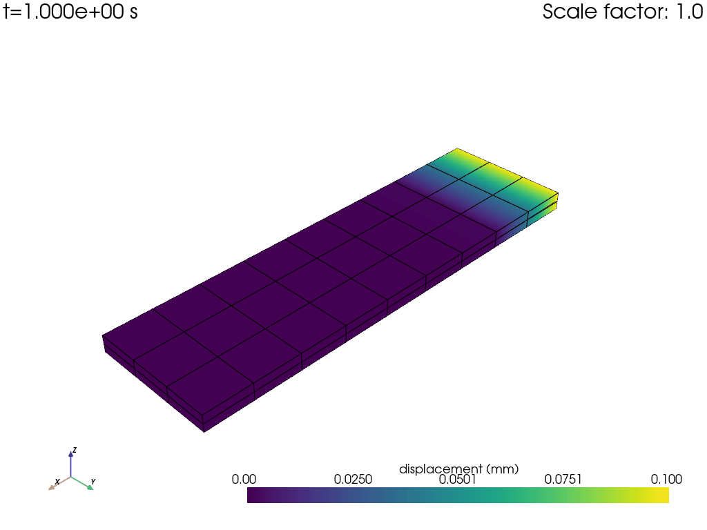

Explora el poder de Python y ANSYS para el análisis por elementos finitos.
PyAnsys es un conjunto de bibliotecas Python que proporciona una interfaz para interactuar con el software de simulación ANSYS, permitiendo a los usuarios automatizar tareas, acceder a capacidades de post-procesamiento y mucho más. PyMAPDL, específicamente, es una biblioteca que conecta Python con ANSYS Mechanical APDL, ofreciendo un acceso programático completo a todas las funcionalidades de MAPDL.
Comienza tu viaje con PyAnsys y PyMAPDL con nuestra guía de instalación paso a paso. Asegúrate de cumplir con los requisitos previos y sigue las instrucciones detalladas para configurar tu entorno.
Aprende a instalarDescubre cómo utilizar PyMAPDL para crear y analizar modelos de elementos finitos. Desde la generación de mallas hasta la ejecución de simulaciones, aprende todo lo que necesitas saber para comenzar.
Ver guía de comandosAplica tus conocimientos con ejemplos prácticos que muestran el uso de PyMAPDL en escenarios reales. Cada ejemplo viene con código fuente completo y una explicación detallada de los procesos involucrados.
Explorar ejemplos